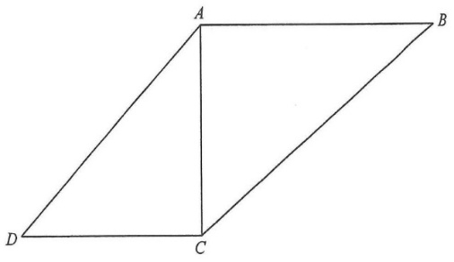

三角比與相似三角形 · 直角三角形中的正切

對角線 $AC$ 把四邊形分成 $\triangle ABC$ 與 $\triangle ACD$。
在 $\triangle ABC$ 中 $\angle BAC=90^\circ$，故 $\angle ABC+\angle ACB=90^\circ$。
在 $\triangle ACD$ 中 $\angle ACD=90^\circ$，故 $\angle CAD+\angle ADC=90^\circ$。
已知 $\angle ABC+\angle ADC=90^\circ$，而 $\angle ABC+\angle ACB=90^\circ$，兩式相減得
$$\angle ADC=\angle ACB$$
再由 $\angle CAD+\angle ADC=90^\circ$ 與 $\angle ABC+\angle ADC=90^\circ$ 得
$$\angle CAD=\angle ABC$$
$\triangle ABC$：$\angle A=90^\circ$，$\angle B=\angle ABC$，$\angle C=\angle ACB$。
$\triangle CAD$：$\angle C=90^\circ$，$\angle A=\angle CAD=\angle ABC$，$\angle D=\angle ADC=\angle ACB$。
故 $\triangle ABC\sim\triangle CAD$（對應頂點 $A\leftrightarrow C$、$B\leftrightarrow A$、$C\leftrightarrow D$）。
對應邊成比例：
$$\frac{AB}{CA}=\frac{BC}{AD}=\frac{AC}{CD}$$
在 $\triangle ABC$（直角在 $A$）：$\tan\angle ACB=\dfrac{AB}{AC}$。
在 $\triangle ACD$（直角在 $C$）：$\tan\angle ADC=\dfrac{AC}{CD}$。
由第 3 步 $\dfrac{AC}{CD}=\dfrac{BC}{AD}$，故
$$\tan\angle ADC=\frac{BC}{AD}$$
這正是選項 C。
其餘選項要額外假設 $AC=AD$（A）、$AC=CD$（B）、$AD=CD$（D），並非必然。
答案 C。